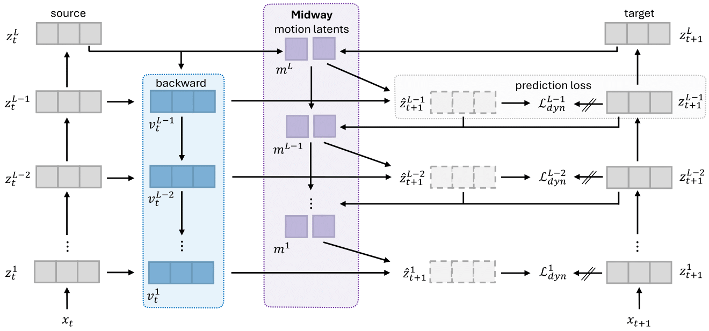
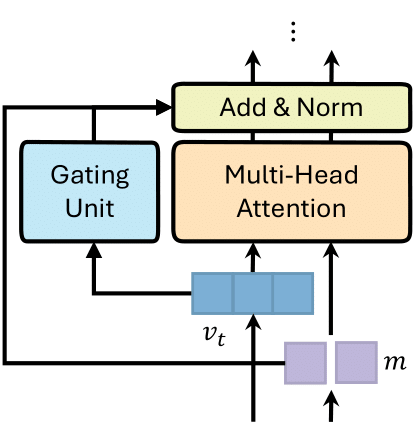
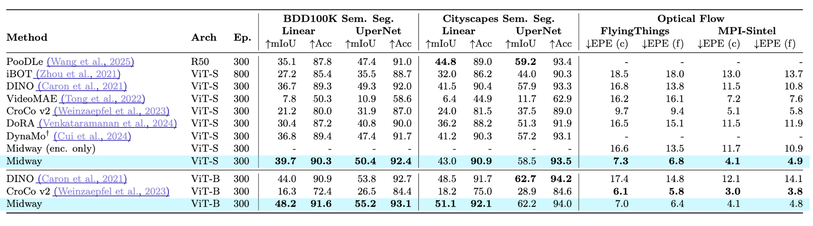
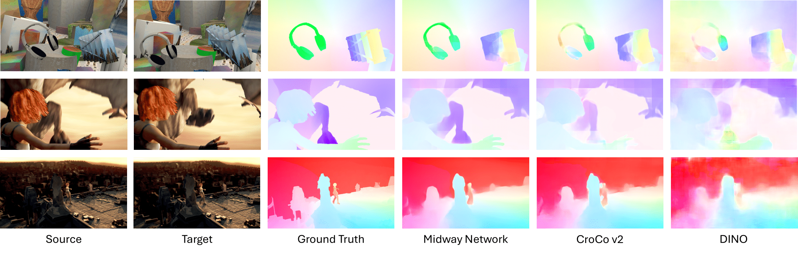
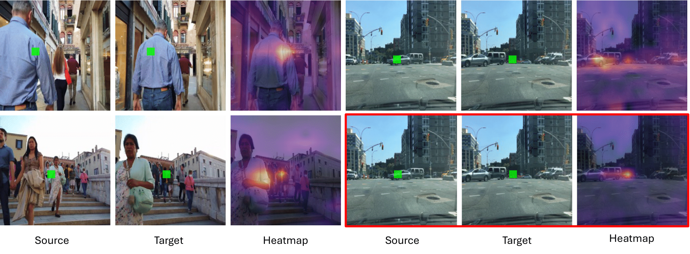
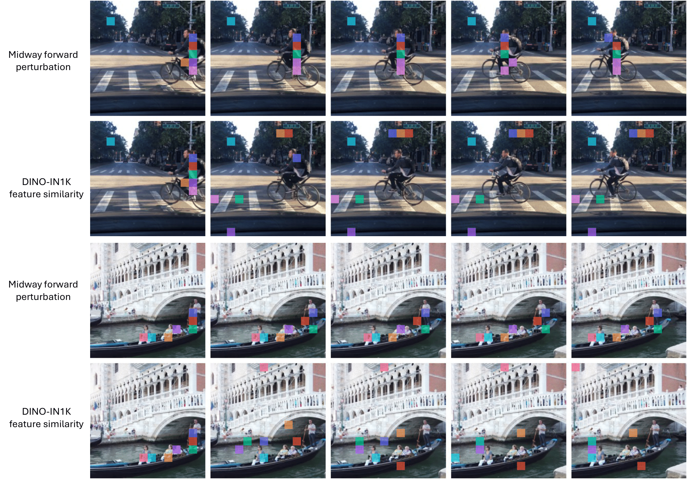

TL;DR: Midway Network is the first SSL architecture to learn visual representations for both object recognition and motion understanding from natural videos, by extending latent dynamics modeling with a hierarchical refinement formulation and dense forward prediction objective.
Prior self-supervised learning (SSL) methods have focused on learning representations for either object recognition or motion understanding, not both. On the other hand, latent dynamics modeling has been used to acquire useful representations of visual observations and their transformations over time, i.e., motion, for control and planning tasks. In this work, we present Midway Network, a new SSL architecture that extends latent dynamics modeling to natural videos to learn strong visual representations for both object recognition and motion understanding. Midway Network handles the complex, multi-object scenes of natural videos by refining inferred motion latents hierarchically in a top-down manner and leveraging a dense forward prediction objective.







@inproceedings{hoang:2026:midway-network,
title={Midway Network: Learning Representations for Recognition and Motion from Latent Dynamics},
author={Chris Hoang and Mengye Ren},
booktitle={International Conference on Learning Representations},
year={2026}}